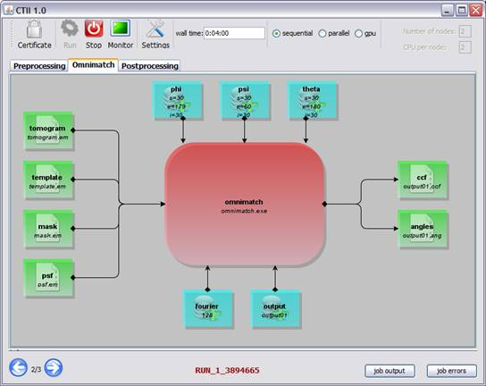
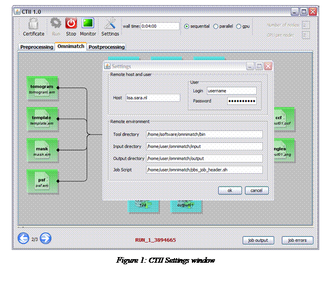
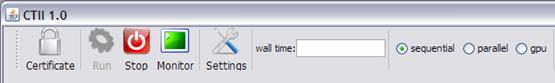
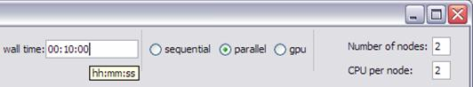
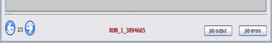
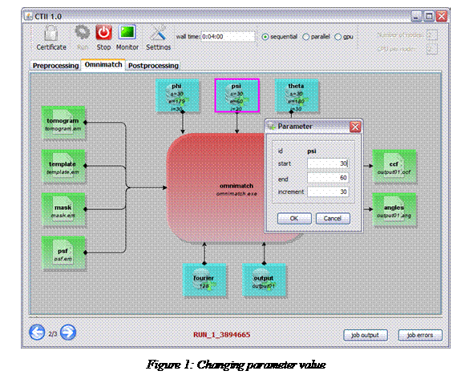
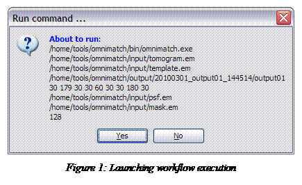
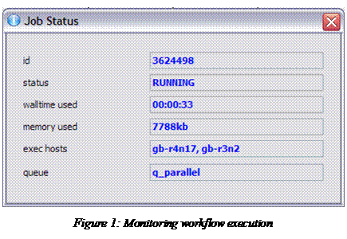

Cell Tomography Intuitive Interface CTII
(Souley Madougou, Ammar Benabdelkader)
User's guide
CTII is a
Java GUI application which aims at facilitating the tasks of scientists
performing the omnimatch 3D template matching experimentations.
Acknowledgment:
This work was carried out in the context of the BiG Grid
project, with financial support from the Netherlands Organization for
Scientific Research (NWO). The work, described in this document, is developed
in collaboration with 3DEM[1]
group at both university of Utrecht and Leiden University Medical Center (LUMC).
Cell Tomography Intuitive
Interface CTII
d. Running omnimatch experiment
6 Annex 2: Experiment description
1
Introduction
Cell Tomography Intuitive Interface (CTII)
is a Java GUI application which aims at facilitating the tasks of scientists
performing the omnimatch 3D template matching experimentations [lebbink 2007[2]].
In addition to the main processing component, CTII also provide two other
components for pre/post processing of the input/output electro microscopy files.
Within the current version of the document, we only focus on the main
processing component (3D template matching).
From the usage point of view, CTII is very
sensitive, since it involves the set-up of a number of sensible parameters
whose adjustments require appropriate expertise and skill in the application
domain.
2
Installation
CTII is an interface to assist the scientist in setting the proper
environment for running and monitoring 3D template matching experiments. It
also helps in organizing and classifying the output results. In order to
properly, use the CTII interface, the following pre-requirements are needed:
-
Omnimatch software must be properly installed and functional.
From now on, we will refer to $omnimatch_home
as the path to omnimatch software. (Omnimatch software can be downloaded from:
….).
-
In order to use the workload management system
(Torque), the user must provide a job submission script which, sets up the
appropriate environment to run omnimatch and launches the jobs. CTII expects a
script file named psb_script_header.sh
located under $omnimatch_home. An
example that script is given in Annex 1.
CTII installer is created using winzip/winrar and can be downloaded
from: ….
To install CTII, you simply need to decompress the
installation package ‘CTII.rar’. After installation is complete, it will create
a new CTII directory with the following structure and items:
§
dist: a
subdirectory containing the JAR files needed by CTII (CTII.jar)
§
dist/lib: a
subdirectory containing the different third party libraries used by CTII
(jgraph, etc.)
§
ctii.bat/ctii.sh: a
script to launch CTII Interface for Windows and Unix respectively
§
config.xml: descriptions
file containing the graphical representation and the description of the omnimatch
workflow experiment. This file is only editable through the CTII graphical user
interface.
§
settings.properties: a
property file used to configure CTII. It specifies the remote location on which
omnimatch will run and sets up the proper environment to use. This file is only
editable through the CTII graphical user interface.
You can run CTII by issuing the following command:
Java –jar CTTI.jar Or
CTTI.bat on
windows
CTII.sh on
UNIX
Figure 1 illustrates the CTII main User Interface, which is
composed of: 1) a top-toolbar, 2) a three-tab panel with a central/body area, and
3) a bottom-toolbar.
 Figure 1: CTII Main Interface
3
Configuration
Most of the CTII configuration is done in the property file ‘settings.properties’. This
file is read by CTII at startup. It presents the setting information in a graphical
interface to be updated and confirmed by the user. This interface is shown in Figure 2. Essentially;
the user needs to feed CTII with connection information and working environment
on the remote host, where omnimatch software is installed (cluster or grid
interface).
·
Host Name: specifies the host name of the machine where
to launch omnimatch (e.g. lisa.sara.nl).
·
User Name: specifies an existing user on the host
machine.
·
Password: specifies the user password on the host
machine.
·
Input directory: specifies
where omnimatch input files are located.
·
Output directory: specifies
the base directory where to create output files along with a summary file for
each run.
·
Job script: specifies
the job submission script which, sets up the appropriate environment to run
omnimatch and launches the jobs.

4
Usage
As illustrated in figures 1&2, CTII
GUI is composed of a top-toolbar, a three-tab panel with a central body, and a
bottom-toolbar.
The left part of the top-toolbar is
populated with five icons, each providing a specific functionality (see figure
3):
-
The certificate icon:
allows the user to ask for a certificate granting him/her the right to use the
GRID (this functionality is currently disabled),
-
The Run icon: allows
the user to launch the omnimatch the workflow execution,
-
The Monitor icon: allows
the user to monitor the workflow during execution,
-
The Stop icon: allows the user to stop the running
execution of the workflow,
-
The Setting
icon: provides the opportunity to update the settings of the remote host, where
omnimatch software environment.
 Figure 3: Top-Toolbar: left part
The right part of top-toolbar is populated
with five icons, each providing a specific functionality (see figure 4):
-
The wall time: input
field to specify the maximum time allowed for the jobs to run (hh:mm:ss). If
the user does not specify it, a default value of 10 minutes will be considered.
-
Mode of execution:
input radio button allowing the user to chose from three different execution
modes:
o
Sequential mode
o
Parallel mode using mpi: the user needs to specify
the number of nodes and the number of processes per node.
o
Parallel mode using GPU, for which you need to
specify the number of nodes to be used and the number of CPUs per node (not
implemented yet)
 Figure 4: Top-Toolbar: right part
The bottom-toolbar
is populated with two icons, two buttons, and a text field, each providing a
specific functionality (see figure 4):
-
The left/right arrows: allows the user to navigate among
multiple and simultaneous workflow runs.
-
The text filed: illustrates the name of the selected
(running) instance of the workflow.
-
The two buttons: allows the user to browse and visualize
the log files related to standard output and standard error for the selected
instance, directly fetched from the remote host, where omnimatch software is
launched.
 Figure 5: Bottom-Toolbar
c. Panel
Tabs
CTII panel is populated with three
functionality tabs, namely: pre-processing tab, omnimatch tab, and post-processing
tab. The omnimatch tab is selected by default and it represents a graph reflecting
the omnimatch 3D template matching workflow.

The
experiment workflow consists of the omnimatch module connected with a number of
components, each representing an input/output argument along with its current
value. Values of the input/output arguments can be changed by double-clicking
on each component of the graph. Figure 5
represent a screenshot of changing the value for the ‘PSI‘ argument.
d. Running
omnimatch experiment
To launch the workflow execution, you need
to click the ‘Run’ icon on the toolbar. As illustrated on figure 7, CTII will
promote the user with an overview on the job be executed and the parameter
arguments. The user is therefore, given the opportunity to check the argument
values and confirm the job submission.


After
a successful launch, the user is presented with a dialog confirming that
“WORKFLOW IS STARTED”. ‘Stop’ and ‘Monitor’ functionalities are then
enabled, giving the user the possibility to monitor or stop the workflow during
execution.
After a successful completion of the
workflow execution, a new subdirectory will be created and three files are
generated under that subdirectory.
Each workflow execution (run) results in a
new subdirectory named as <date:yyyymmdd>_<outputdirectory>_<time:hhmmss>.
For example, subdirectory 20100219_output01_150211 means that workflow is being
executed on the 19th of February 2010 at 15:02:11.
In addition to the two files generated by
the template matching process (.ang and .ccf), CTII generates an XML file
describing the workflow process and the used argument values per run. An
example of the experiment description is given in annex 2.
5
Annex
1: Torque job script
![Text Box: #!/bin/bash
# request NODES nodes, 2 processors per node:
#PBS -lnodes=2:ppn=2
# job requires at most 00:10:00 wallclock time
#PBS -lwalltime=00:10:00
# cd to the work directory
cd $HOME/omnimatch
# Load appropriate modules
module load openmpi/gnu/64/1.3.2
# determine the number of processors:
nprocs=`wc -l < $PBS_NODEFILE`
echo start of job in directory $PBS_O_WORKDIR
echo number of nodes is $nprocs
echo the allocated nodes are:
cat $PBS_NODEFILE
# run the program
echo Start now...
#mpirun -np $nprocs
exit 0](help_files/image017.gif)
6
Annex
2: Experiment description
![Text Box: <?xml version="1.0" encoding="UTF-8"?>
<workflow>
<process id="omnimatch">
<command>omnimatch.exe</command>
<input id="tomogram">
<value>tomogram.em</value>
</input>
<input id="template">
<value>template.em</value>
</input>
<input id="output">
<value>output01</value>
</input>
<input id="phi">
<value>30 179 30</value>
</input>
<input id="psi">
<value>30 60 30</value>
</input>
<input id="theta">
<value>30 180 30</value>
</input>
<input id="psf">
<value>psf.em</value>
</input>
<input id="mask">
<value>mask.em</value>
</input>
<input id="fourier">
<value>128</value>
</input>
</process>
</workflow>](help_files/image018.gif)